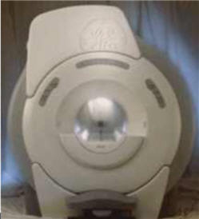
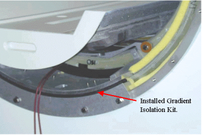
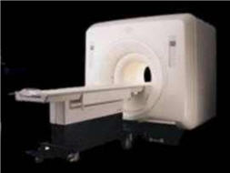

Operating Documentation
Direction 5440000, Rev# 5
Signa HDxt Service Methods
Module Version 1.0, Version Date 6/26/07
Operating Documentation |
This document is intended to aid the Field Engineer in identifying the system type and required parts needed as part of the IIQ Kit installation process. Prior to installing the IIQ Kit, the Field Engineer must determine magnet type and verify all the required kits and parts are on site.
The Magnet Bridge Support kit (Part Number 5195386 / CAT M3090NE) contains Bridge Supports for the following magnets:
S Series magnet enclosure parts are found in Kits 5195382, 5195383, and 5195384
LCC Wide Open Enclosure (Illustration 1) parts are found in Kits 5195383 and 5195384
Cx / LCC Horizon (Salt Block) Enclosure (Illustration 3) parts are found in Kits 5195382, 5195383 and 5195384
The IIQ Kit is one of a number of kits that may be required to properly upgrade the magnet to the HD / HDx current production level. When this IIQ upgrade is performed, it is highly recommended that the Field Engineer check the list and chart below for the scanner type and verify all the parts are on hand before beginning the upgrade.
S Series Magnets
RF Ground Strap - M3090NF
Gradient Lead Board - 5180646 - ONLY when 2 AWG leads BRM is used
Cx Magnets
RF Ground Strap - M3090NF
Gradient Isolation Kit - Coil Lift Tool 2261179 is required to install Gradient Isolation Kits
2242380 BRM Gradient Isolation Kit
2247493 CRM Gradient Isolation Kit
Gradient Lead Board - 5180646 - ONLY when 2 AWG leads BRM is used
Gradient Cable Restraint Block 5127441-2 - ONLY when 2 AWG leads BRM is used
| NOTE: | See the BRM/CRM upgrade chart for details |
For Skintight (wide open) covers, install kit labeled Bridge Support for LCC Magnet, Part # 5195383 and parts of 5195384 (Both included in IIQ Kit 5195386). See Illustration 1. The installation document (2318581) is included in the kit. This installation document will provide further information on which parts are to be used from the kits.
Illustration 1: LCC Wide Open Enclosure

When the system has skintight covers, verify that Gradient Isolation brackets are installed (see Illustration 2). If the Gradient Isolation Brackets are missing, they must be installed.
Kit 2242380 for BRM gradient coil
Kit 2247493 for CRM gradient coil
Illustration 2: Checking for Gradient Isolation Kit

Important: Coil Lift Kit (Part Number 2261179) must be ordered from the tool depot and on site before you attempt to install the gradient isolation brackets.
Gradient Radial Supports Kit (5195385) is included for magnets that need upper radial support. See Direction 2318581, Signa Cx/K4 Magnet Wide Open Enclosure Bridge Support for more details.
For Horizon (Salt Block) covers, install kit labeled Bridge Support for S series (Long Bore), CX & LCC Magnet. Parts of Kits 5195382, 5195383, and 5195384 (All included in IIQ Kit 5195386). See Illustration 3. The installation document (2318581) is included in the kit. This installation document will provide further information on which parts are to be used from the kits.
Gradient Radial Support kit (5195385) is included for magnets that need upper radial support (see Direction 2318581, Signa Cx/K4 Magnet Wide Open Enclosure Bridge Support for more details.
Illustration 3: Cx / LCC Horizon (Salt Block) Enclosure
